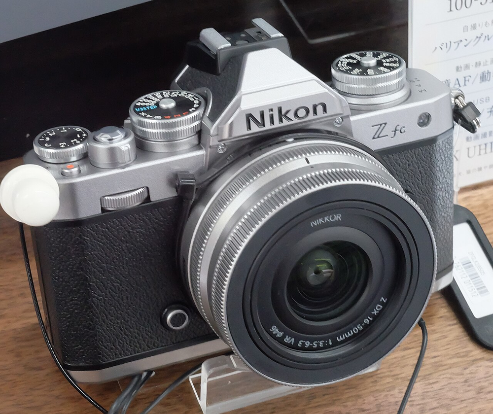
source: wikipedia
Quand on commence la photo on a tendance a vouloir aller toujours plus vers du matériel plus compétent, par exemple j'ai commencé, comme beaucoup de monde, par mon téléphone, puis j'ai pris mon premier APS-C, un Nikon D5600, j'ai acheté mon premier objectif "prime", un 50mm f/1.4, sans AF. Puis un 50mm f/1.8 avec autofocus parce que c'est quand même super pratique même si je rêvais d'être ce Hipster qui faisait tout de façon manuelle. Ensuite j'ai eu mon premier Plein format, un Nikon D750. Je vous fais pas le détail des objos, vous avez compris. Mais le D750 c'était un reflex, et les hybride ça avait l'air vraiment bien, alors je suis allé sur un Sony A7III.
Alors oui j'ai un appareil que je juge vraiment trop bien, mais il a un problème, je me suis fait un parc d'objos pas trop mal, un 20mm f/2.8, un 35mm f/2.8, un 50mm f/1.8 un 28-70mm f/3.5-5.6 et un 55-210mm monture E qui crop mais qui me permet de zoomer assez loin. Le problème de ça c'est que quand je sors je me traine une quantité de matériel folle, ce qui me décourage souvent d'amener mon appareil un peu partout. Et donc me limite dans ma pratique photographique
"Et pourquoi tu te limites pas à un seul objectif ?"
C'est un peu le soucis, si je le fais et que je loupe une scène parce que j'ai pas le bon objectif, je vais être dégouté de pas avoir pris tout le matos, si j'amène tout mon matos je fini par être surchargé et mon dos de vielle personne (j'anticipe) me le fait savoir.
A la base comme tout bon hipster de la photo je voulais me tourner vers un Fujifilm X100VI, avoir un petit appareil léger à trainer partout assez simplement, avec une seule optique, comme ça pas le choix. Mais je ne suis pas crésus, donc j'ai cherché des alternatives, il me fallait donc un boitier APS-C, avec une optique d'environ 35mm et une ouverture cool (genre au moins f/2.8mm). Evidemment, je suis pas contre un look un peu rétro, parce que j'aime bien que l'objet soit beau.
Donc après avoir un peu tout comparé, j'ai fini par me focaliser sur le Nikon Zfc avec un objectif Nikkor Z DX 24mm f/1.7 Il répond plus ou moins à tout ce que je cherchais, le seul truc que le X100VI fait mieux c'est qu'il a des recipes vraiment stylées, mais le premier jour je me suis rendu compte que le Nikon Zfc embarquait des "recipes" via le picture control, c'est moins poussé mais juste pour poster des photos rapidement en story instagram, ça fait vraiment le café. Et étant à la base un fanboy de Nikon, ben je suis plutôt content.
Et ben, comme prévu je le traine partout, je l'utilise un peu comme un argentique, vu que les molettes de réglages sont physiques sur le haut ça permet ce feeling argentique, je m'amuse même à complètement fermer l'écran pour ne pas le regarder trop souvent. Et donc avoir cette "surprise" de voir le resultat à la fin de la session photo plutôt que pendant. C'est très cool. En revanche, contrairement à ce que je pensais, l'appareil attire plus l'attention que mon A7III, mais souvent c'est pour dire que l'appareil est beau (je suis d'accord avec ça).
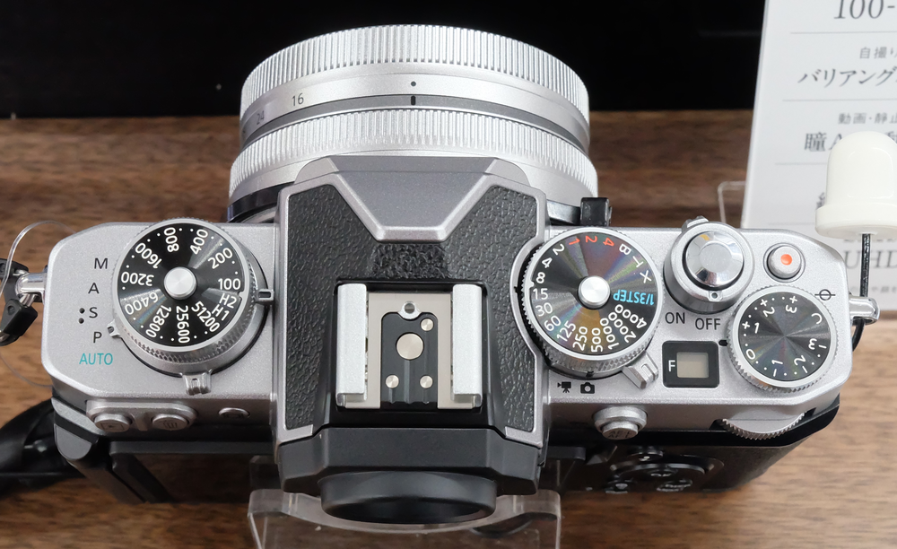
source: wikipedia
évidemment tout n'est pas tout rose, l'ouverture à 1.7 est cool mais l'objectif est vraiment bon autour de f/4 pour avoir un piqué correct. Il est aussi un peu en galère sur les scènes nocturnes parfois et le bruit monte assez vite. Personnellement j'aime mes photo avec du "grain" mais j'aime encore plus quand elles ont du détail. Enfin, un détail que j'avais pleinement oublié après plus de 5ans à utiliser du plein format, l'ouverture ne va pas au delà de f/11.
Bref en conclusion je suis quand même extrêment content de mon achat, parce qu'il me donne envie d'aller faire de la photo, et c'était vraiment le but principal je me suis aussi rendu compte qu'il me permettait de mieux réfléchir mes photos et mes placements, chose qui était pourtant possible avec le Sony A7III mais sur lequel je mettais surtout le 28-70mm pour la polyvalence ce qui était une erreur. J'ai encore beaucoup de travail à faire, et je reviendrais bientôt avec, peut-être une revue plus complète.
J'ai fait des tests en RAW + JPG L pour tester les recipes, pour vous donner une idée, voici des .jpg sortis directement de l'appareil, sans traitement (convertis en .webp lossless pour éviter de cramer tout le stockage de ce site dès le premier article)
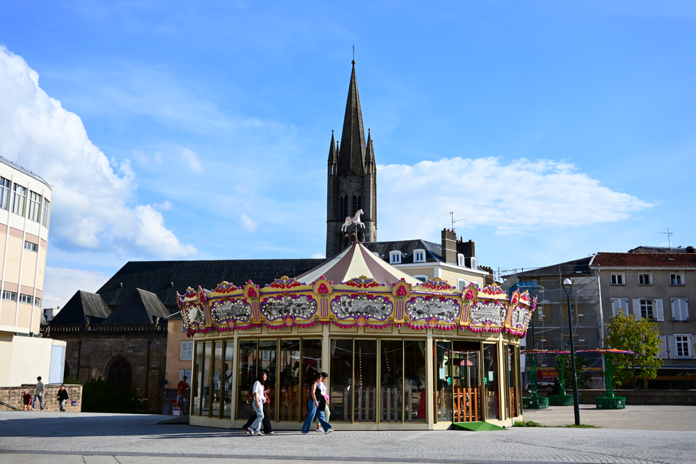
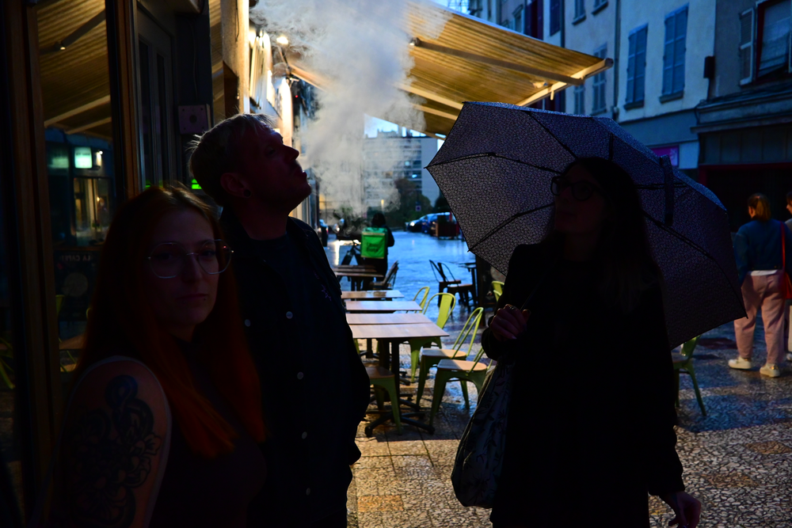
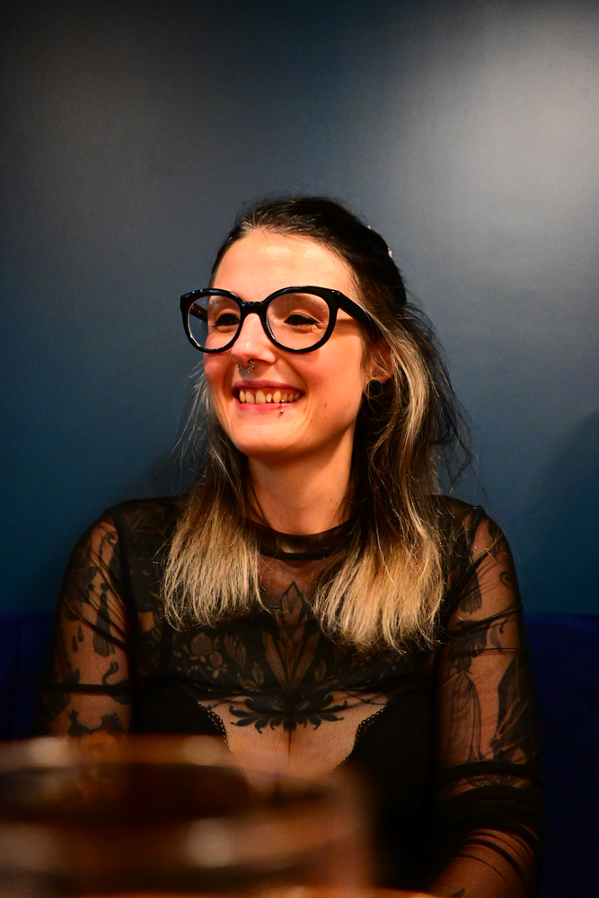
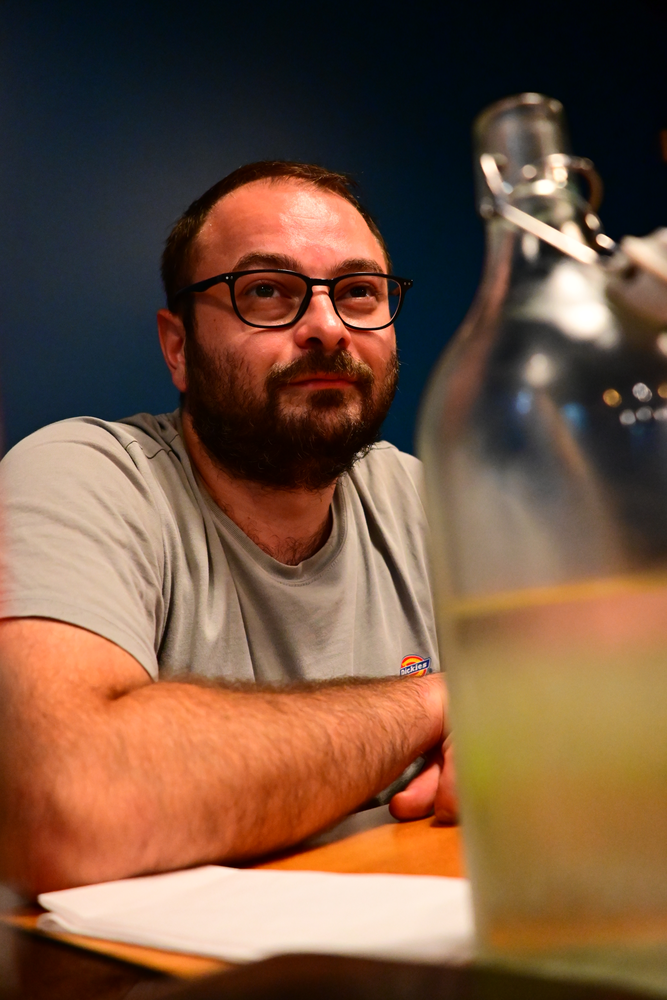
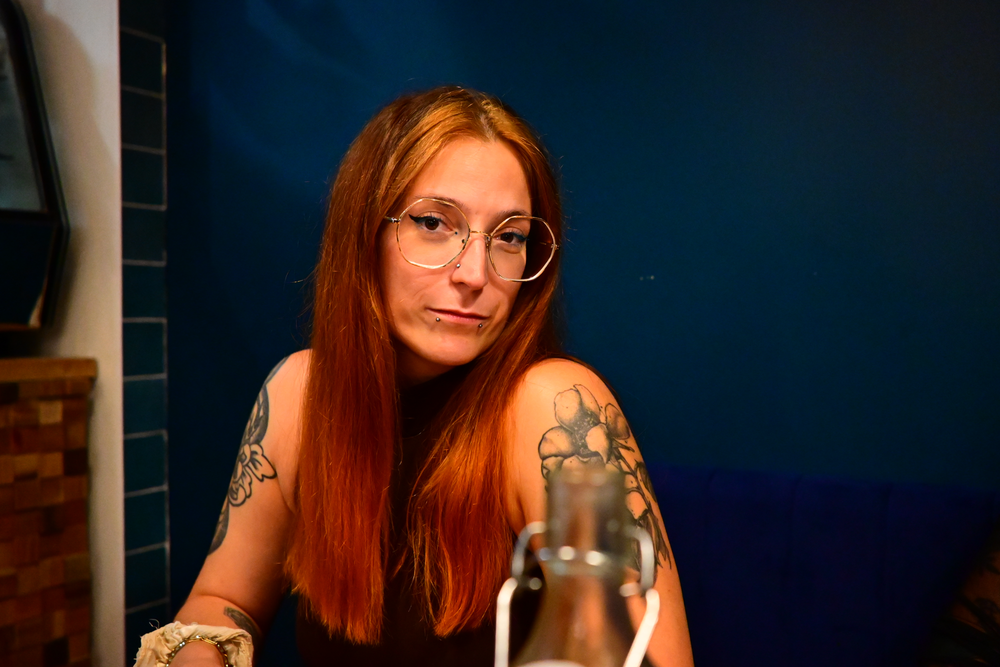
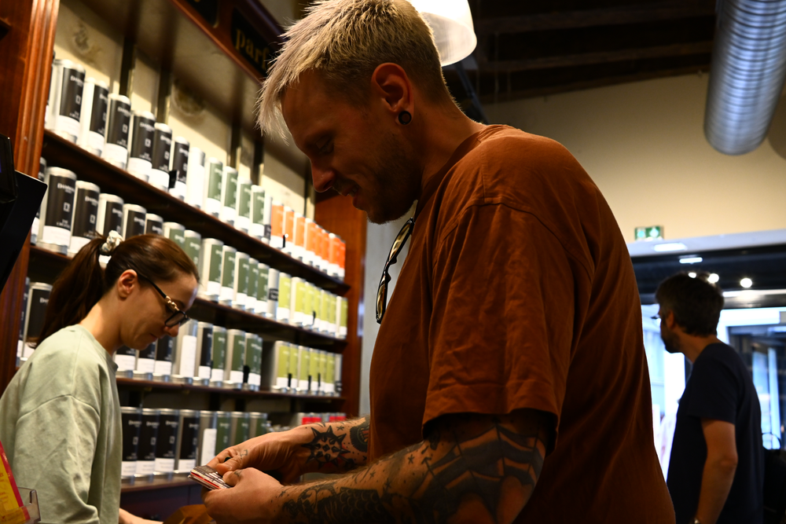
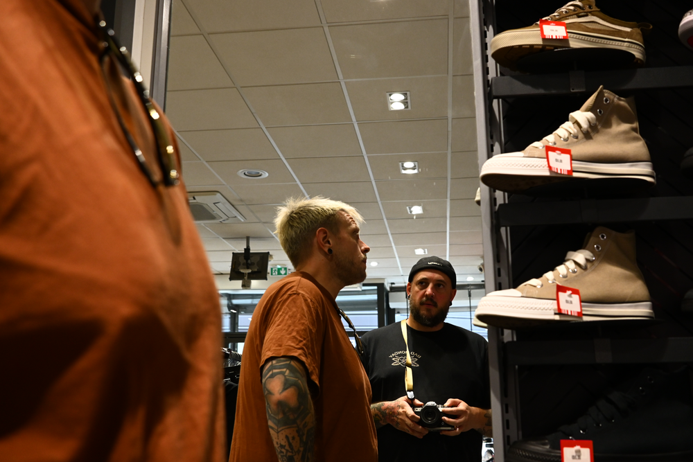
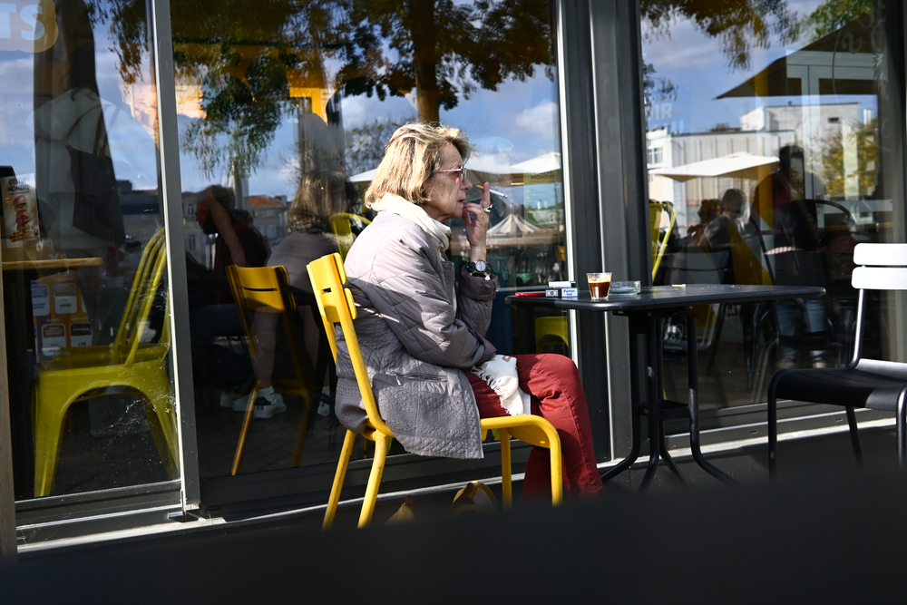
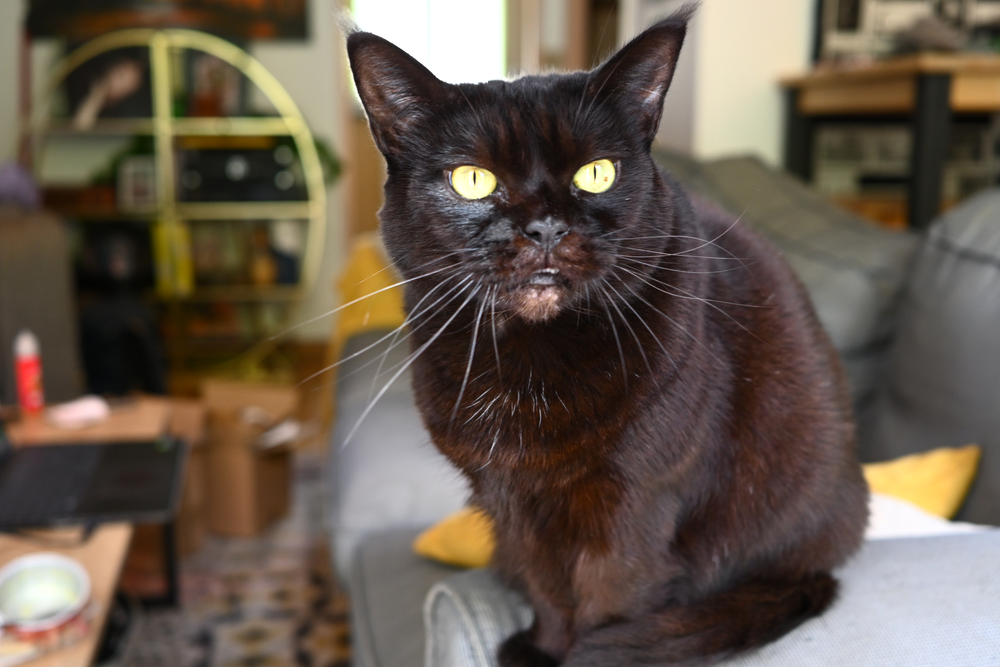
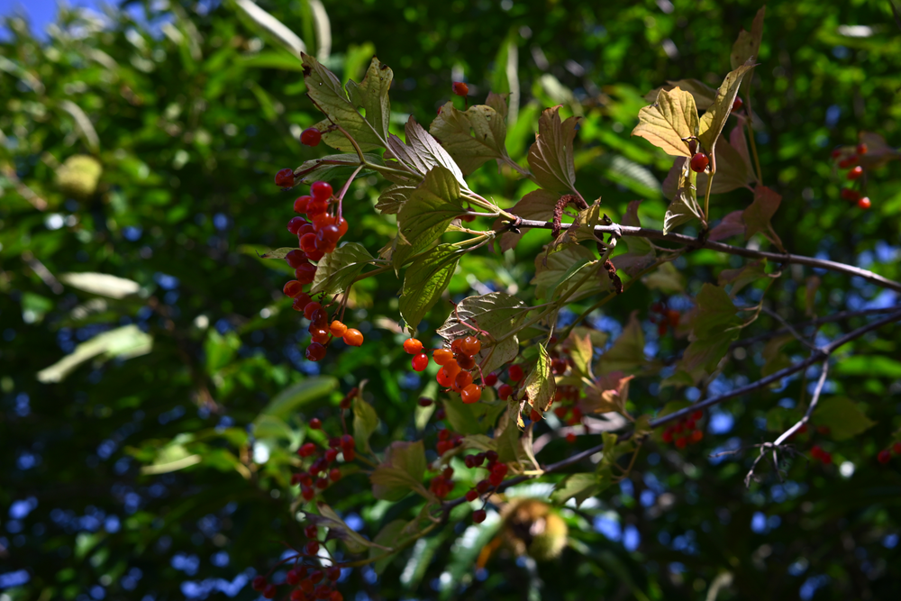
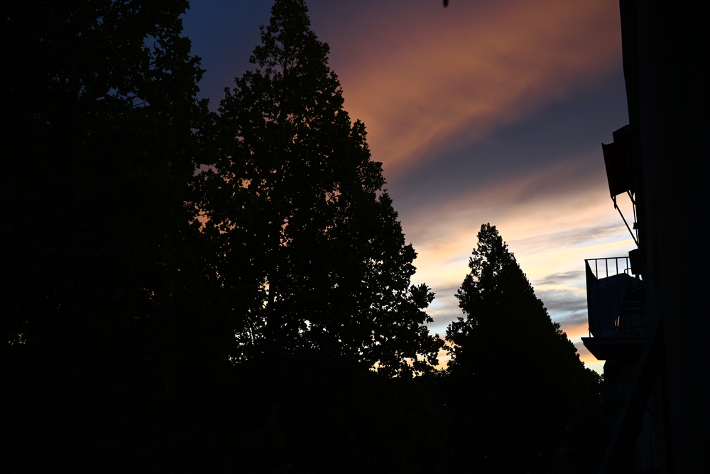
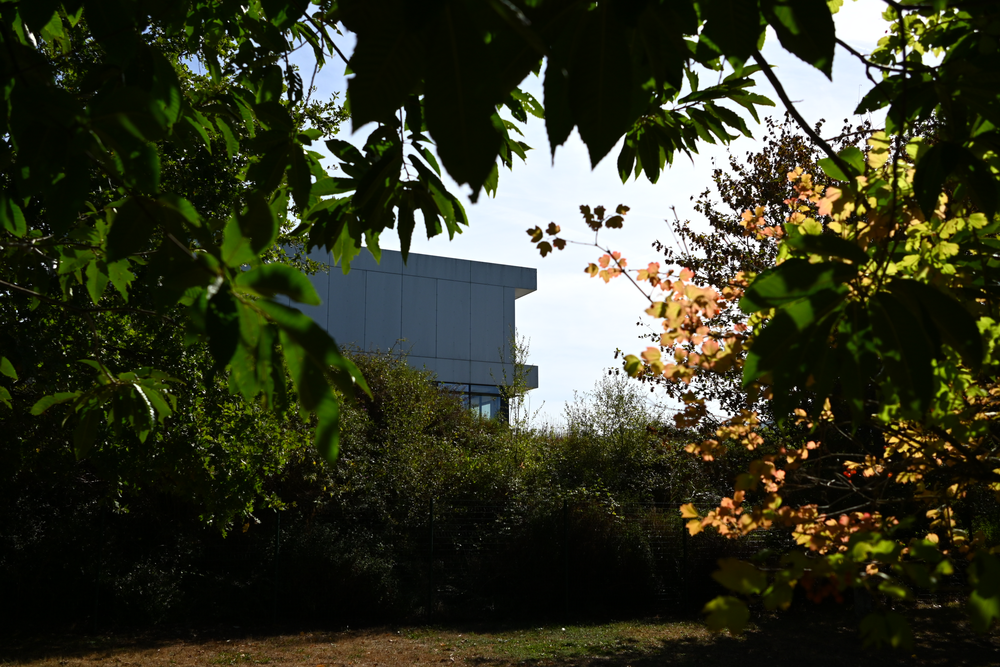
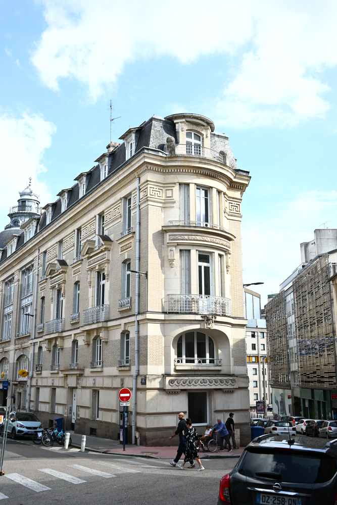
Ceci était mon premier article de blog ici, ça va un peu dans tous les sens, mais j'espère que ça vous plaira et que je ferai du contenu un peu plus qualitatif à mesure que j'en écrirais de nouveaux. J'essayerai d'en faire sur certaines sorties, pour donner des conseils. Je sais pas vraiment où je vais avec ça. Je mettrais un système de likes et de commentaires quand j'aurais moins la flemme de coder des trucs complexes. Si vous voulez avoir des news sur les articles hésitez pas à rejoindre mon canal sur Instagram, il est pas forcément hyper actif mais je compte essayer de changer ça, justement avec ces articles.
Le Canal Insta